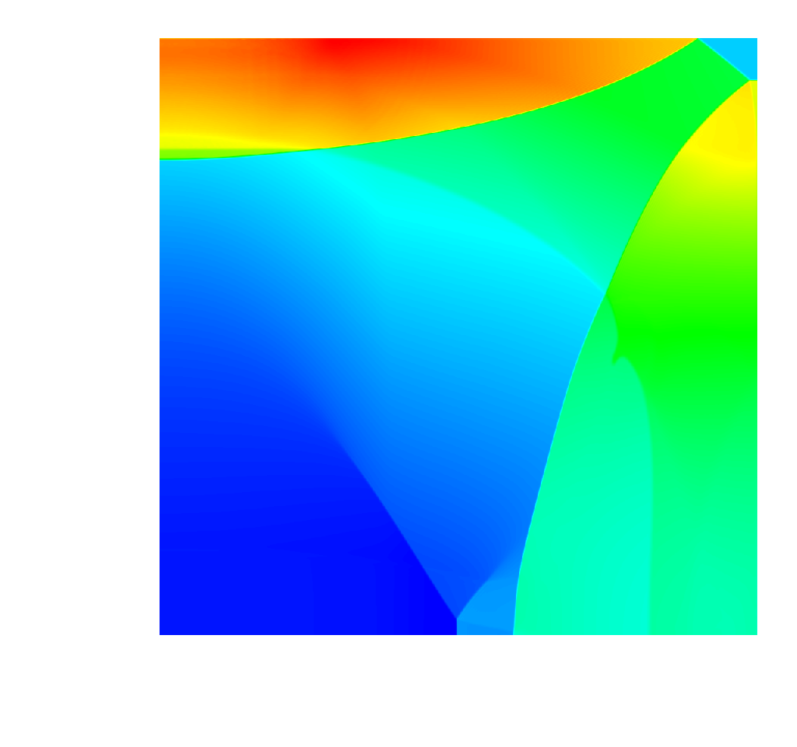

< Mini-apps
A Lagrangian-Eulerian hydrodynamics benchmark, part of the mantevo project.
CloverLeaf
Introduction
CloverLeaf is a mini-app that solves the compressible Euler equations on a Cartesian grid, using an explicit, second-order accurate method. Each cell stores three values: energy, density, and pressure. A velocity vector is stored at each cell corner. This arrangement of data, with some quantities at cell centers, and others at cell corners is known as a staggered grid. CloverLeaf currently solves the equations in two dimensions, but a 3D implementation has been started in: CloverLeaf3D.
The computation in CloverLeaf has been broken down into "kernels" — low level building blocks with minimal complexity. Each kernel loops over the entire grid and updates one (or some) mesh variables, based on a kernel-dependent computational stencil. Control logic within each kernel is kept to a minimum , allowing maximum optimisation by the compiler. Memory is sacrificed in order to increase peformance, and any updates to variables that would introduce dependencies between loop iterations are written into copies of the mesh.
For more information, please see the documentiation included in the repository.
Released Implementations
Reference
This is the reference release of the code. This version features both MPI and OpenMP as default.
Serial
This is the serial version of the code, with no parallelism. This can be used as a reference version for new language ports.
MPI
This is the domain decomposed MPI implementation of CloverLeaf.
OpenMP
This is the on node parallelism OpenMP implementation.
OpenMP4
This is the extension of the OpenMP version, to make use of the new directives in OpenMP4.
OpenACC Loops
This is the OpenACC offload version using loop directives.
OpenACC Kernels
This is the OpenACC offload version using kernel directives.
OpenACC Cray
This is the OpenACC offload version using Cray directives.
Intel Offload
This is the offload version using Intel offload directives.
CUDA
This is a native GPU implementation written in CUDA.
OpenCL
This is a native GPU implementation written in OpenCL.
OPS
This is an implemementation of CloverLeaf using the OPS framework, providing an abstraction layer for the CPU, GPU and Intel MIC.
CAF Arrays
This is a PGAS implmentation using Coarray Fortran with Arrays.
CAF Buffers
This is a PGAS implmentation using Coarray Fortran with explicit buffers.
OpenSHMEM
This is a PGAS implmentation using OpenSHMEM.
Publications
- Experiences at scale with PGAS versions of a Hydrodynamics application (pdf) , A.C. Mallinson, W.P. Gaudin, J.A. Herdman, S.A. Jarvis, The 8th International Conference on Partitioned Global Address Space Programming Models (PGAS'14), Oct 7-10, Eugene, Oregon, USA
- Optimising Hydrodynamics applications for the Cray XC30 with the application tool suite , W.P. Gaudin, A.C. Mallinson, O. Perks, J.A. Herdman, D.A. Beckingsale, J.M. Levesque, M. Boulton, S. McIntosh-Smith, S.A. Jarvis, Awarded Best Paper, The Cray User Group 2014, May 4-8, 2014, Lugano, Switzerland
- CloverLeaf: Preparing Hydrodynamics Codes for Exascale (pdf) , A.C. Mallinson, D.A. Beckingsale, W.P. Gaudin, J.A. Herdman, J.M. Levesque, S.A. Jarvis, The Cray User Group 2013, May 6-9, 2013, Napa Valley, California, USA (2013)
- Towards Portable Performance for Explicit Hydrodynamics Codes (pdf), A.C. Mallinson, D.A. Beckingsale, W.P. Gaudin, J.A. Herdman, S.A. Jarvis, The International Workshop on OpenCL (IWOCL) 2013
- High-level Abstractions for Performance, Portability and Continuity of Scientific Software on Future Computing Systems, G.R. Mudalige, I.Z. Reguly, M.B. Giles, W. Gaudin, A. Mallinson and O. Perks
- Accelerating Hydrocodes with OpenACC, OpenCL, and CUDA, JA Herdman, WP Gaudin, S McIntosh-Smith, M Boulton, DA Beckingsale, AC Mallinson, SA Jarvis, 3rd International Workshop on Performance Modeling, Benchmarking and Simulation (PMBS12), held as part of the International Conference for High Performance Computing, Networking, Storage and Analysis (SC12), Salt Lake City, November 10-16, 2012.
